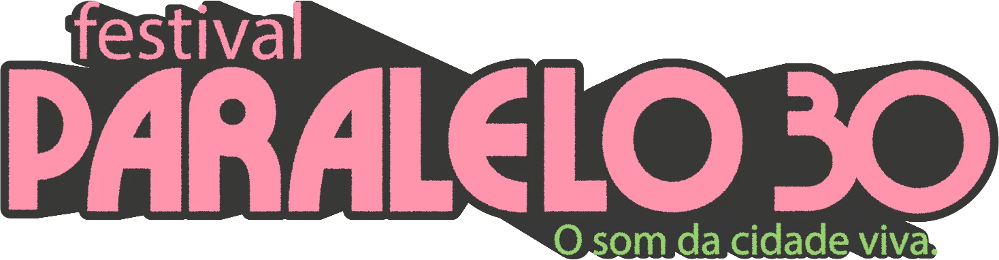
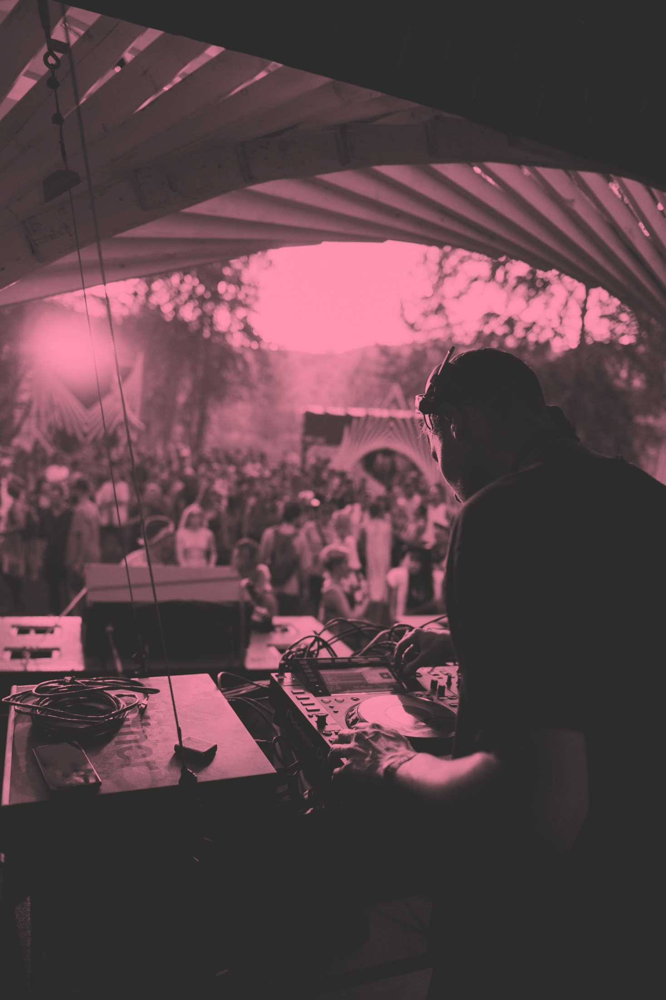
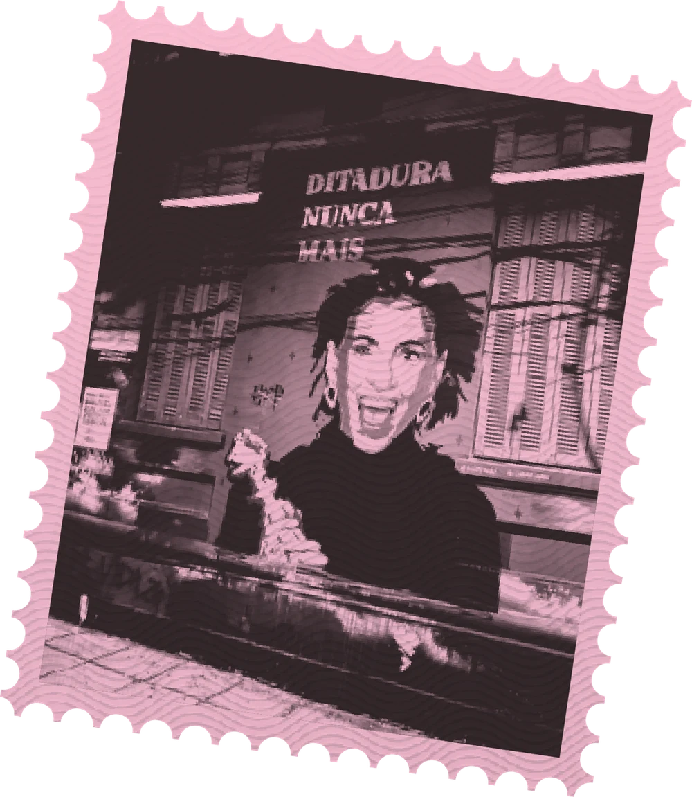
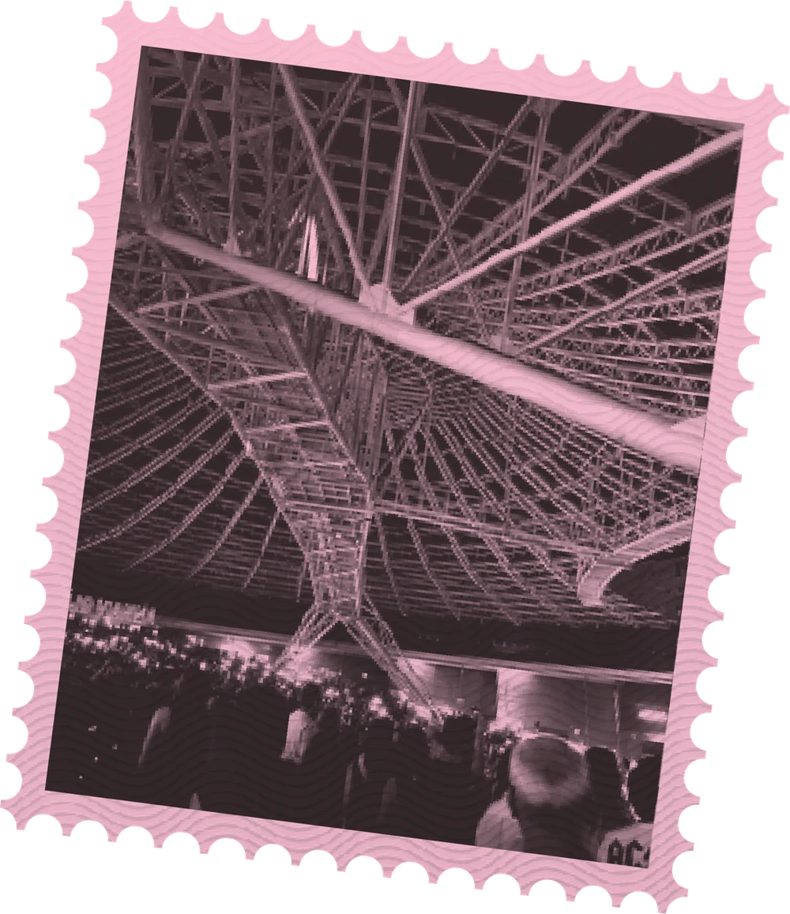
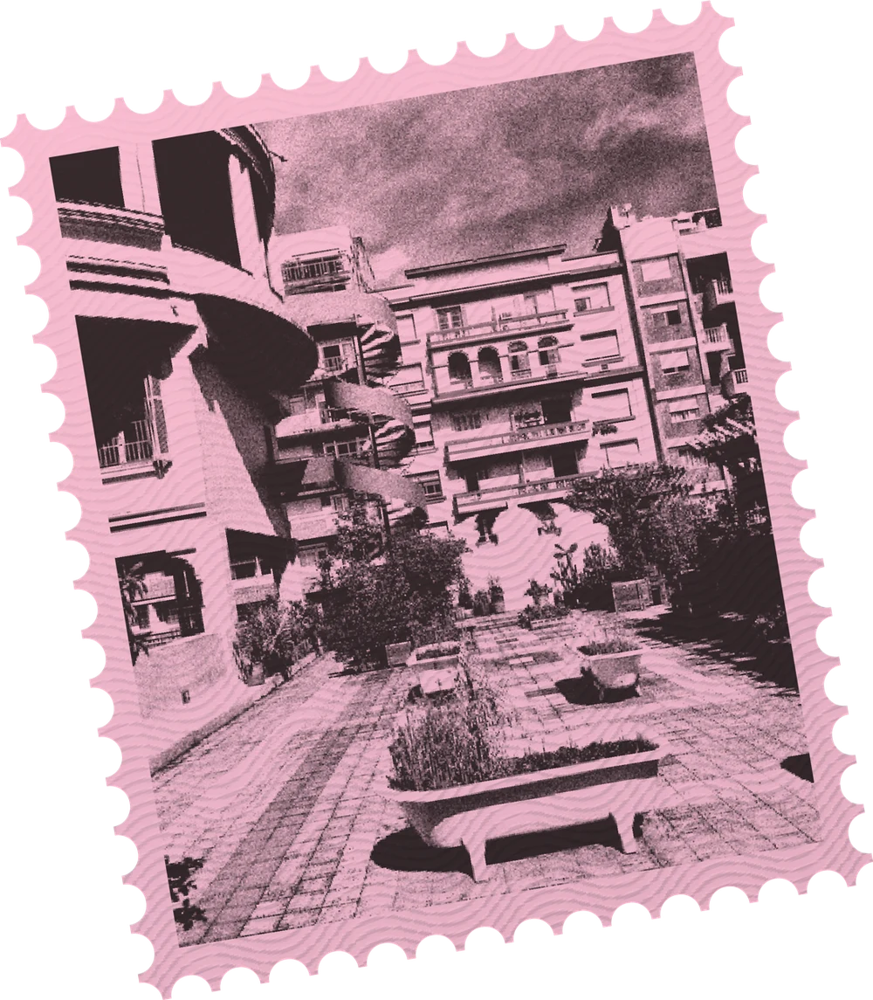
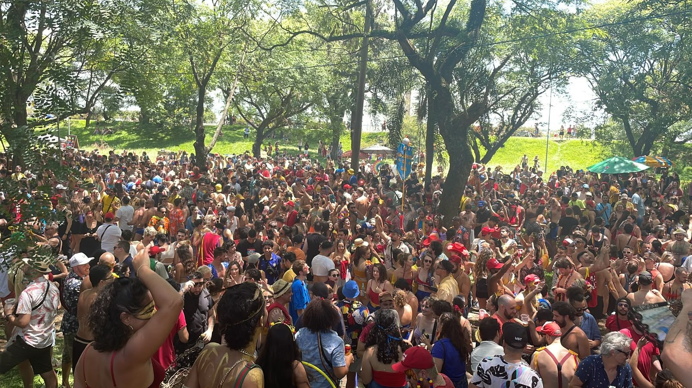

01
Manhã
9h–12h30
Pra curtir em família
Música
Repertório infantil e familiar, MPB e música regional.
Oficinas
Cerâmica, pintura, contação de histórias e outras atividades manuais.

01–03 out
2027 · Parque da Redenção

3 dias de evento
Entrada gratuita
Inscreva-se para ativar o seu passaporte cultural
Quero meu passaporte →


01 — O festival
Festival gratuito de 3 dias no Parque da Redenção, em Porto Alegre, com programação 100% de artistas locais e oficinas criativas em todos os horários. Um Passaporte Cultural, ativado pelo site, leva o público a carimbar em comércios da cidade e retirar um brinde final na banca de brindes do festival, o que movimenta a economia da região central.
02 — Programação
Com a mesma grade de sexta a domingo, cada faixa de horário tem músicas e oficinas pensadas para ti.
01
Manhã
Pra curtir em família
Música
Repertório infantil e familiar, MPB e música regional.
Oficinas
Cerâmica, pintura, contação de histórias e outras atividades manuais.
02
Tarde
Pra curtir com os amigos
Música
Pop, indie, rock gaúcho e MPB.
Oficinas
Vela, journal, scrapbook, pintura, roupas, colagens e fotografia experimental.
03
Fim de tarde
Pra curtir ao pôr do sol
Música
Rap, MPB, samba, pagode e trap.
Oficinas
Vídeo, fotografia, customização de peças, serigrafia e grafite.
04
Noite
Pra curtir até a meia-noite
Música
Techno, funk e cena underground.
Oficinas
Zines, colagens, fotografia noturna, light painting e beatmaking.

03 — No parque
20
Barracas de empreendedores
Artesanato, cerâmica, velas, papelaria, ilustração, moda autoral, plantas e brechós de Porto Alegre e região.
10
Food trucks e bares
Praça de alimentação com mesas e cobertura, opções vegetarianas, veganas e itens infantis pela manhã.

Passaporte Cultural
1
Receba o passaporte digital com QR code ou retire o impresso nas barracas do evento.
2
Ganhe um desconto ou brinde em cada parceiro e leve o carimbo.
3
Com 15 carimbos, passe na banca de brindes do festival e leve seu presente final.